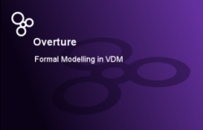
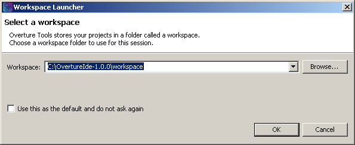

A detailed workflow while installing the Overture tools is presented here. For the basic installation procedure, please proceed to the download page.
Step 1 : executing "overture.exe" splash screen

Step 2 : warning to set the workspace directory

Step 3 : dialogue to set the workspace directory

Step 4 : Overture IDE welcome page

Step 5 : initial Overture IDE appearance